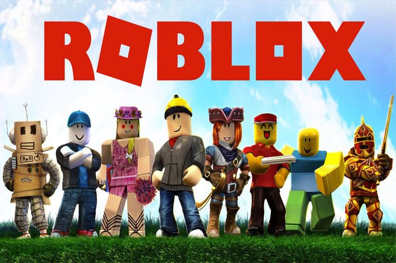
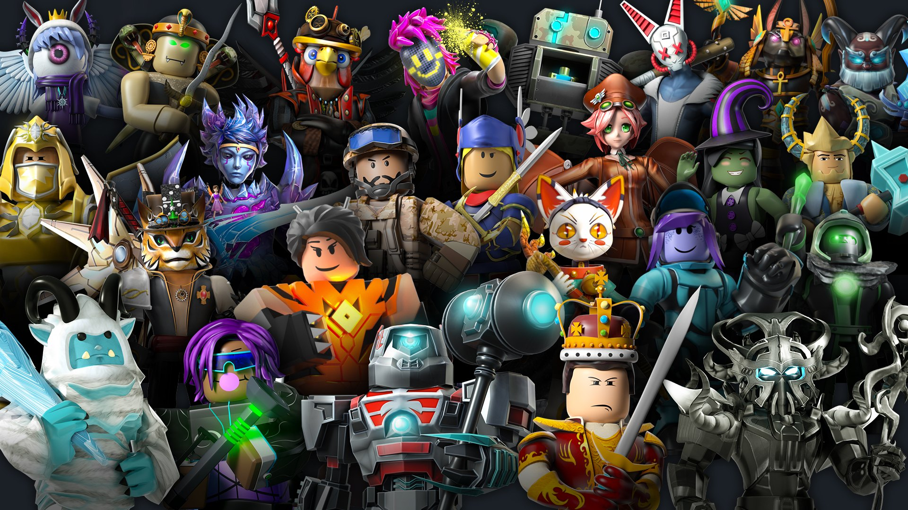
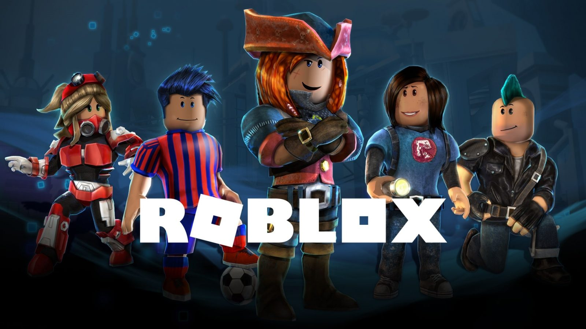

- 
Roblox - совсем не требовательная игра. Даже с таким огромным количеством контента, которое вы можете в ней найти она не займёт больше двух гигабайт на вашем устройстве. А также Roblox не требует от вас иметь хорошие составляющие устройства, вы можете играть на минимальных:
- Процессор: Intel Pentium 4 1.6GHz или AMD Athlon64 2800
- Оперативная память: 256 МБ
- HDD: 200 МБ на жестком диске
- Видеокарта: GeForce FX5200 или Radeon 9600 SE
- 
Roblox — игровая онлайн-платформа и система создания игр, позволяющая любому пользователю создавать свои собственные и играть в созданные другими игры, охватывающие широкий спектр жанров. Игроки могут создавать любые игры на самые различные тематики: паркур, гонки, шутеры, файтинги и т.д. Есть возможность полной кастомизации своего персонажа различными аксессуарами, одеждой, волосами.
- 
Основателем Roblox является Дэвид Б.Базуки и покойный Эрик Кассел. В настоящее имя Дэвид является главным директором компании Roblox Corporation и известен под ником builderman